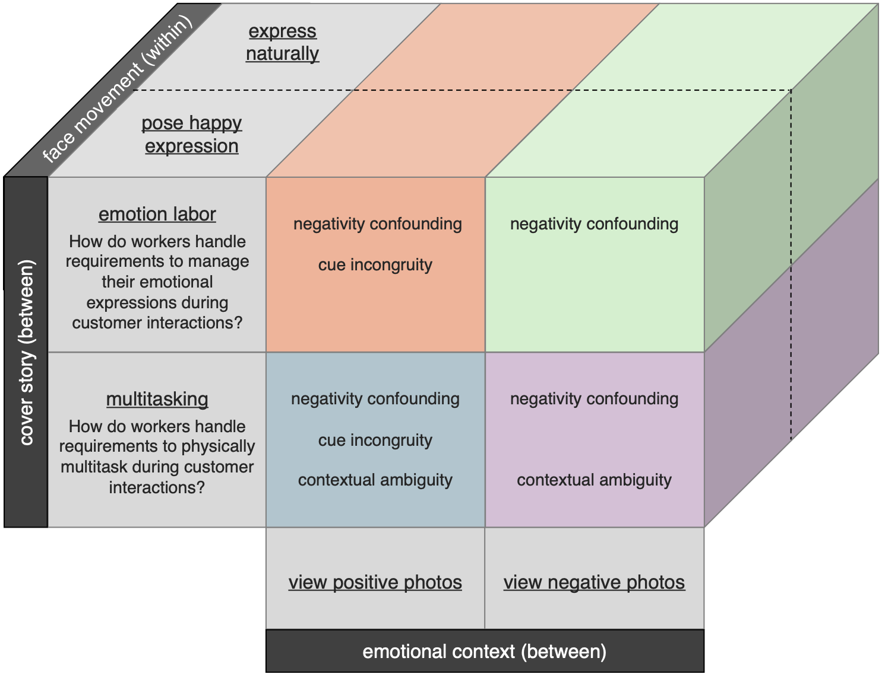

knitr::include_graphics("figures/DesignMatrix.png")
Researchers and lay people alike have long been interested in whether it’s possible to “smile your way to happiness”. Such an idea relates not only to fundamental questions about causal connections between peripheral nervous system activity and emotional experience, but also about how these systems are regulated by individuals and their environments. Emotion embodiment research provides both a theoretical and empirical rationale for suspecting that people can smile their way to happiness – but research on emotion regulation and labor suggests that posed smiles may actually have detrimental effects of emotions and well-being. In the present Registered Report, we provide pre-registered tests of three potential explanations for the discrepancy: (1) emotion regulation and labor research confounds the positive effects of posed smiles with the negative effects of situations that require facial expression management, (2) posed smiles only increase happiness in positive, but not negative, situations, and (3) posed smiles only increase happiness in situations where there is not an emotion-related explanation for the behavior.
emotion, emotion embodiment, emotion regulation, emotion labor, facial feedback
Researchers and lay people alike have long been interested in whether it’s possible to “smile your way to happiness” (Folk and Dunn 2023). In addition to its allure as a positive psychology intervention, such an idea relates to fundamental questions about the nature of emotion. For over a century, emotion embodiment theorists have posited – often controversially – that peripheral nervous system activity causally shapes a variety of emotion-related processes (Cacioppo, Berntson, and Klein 1992; Damasio and Carvalho 2013; Scherer and Moors 2019; Feldman, Bliss-Moreau, and Lindquist 2024; Barrett 2017; Tomkins 1962; Wood et al. 2016; James 1884, 1894). This includes not only mood, but also emotion recognition, the processing of emotional words and concepts, and decision making (Niedenthal 2007). Research on posed smiles seems to support such theories. Indeed, the idea that posed smiles can increase feelings of happiness has recently been supported by a meta-analysis of nearly 50 years of research (Nicholas A. Coles, Larsen, and Lench 2019), a large-scale adversarial collaboration (Nicholas A. Coles et al. 2022), and several studies designed to critically evaluate the role of demand and placebo effects (Nicholas A. Coles et al. 2023).
The emotion embodiment literature provides both a theoretical and empirical rationale for suspecting that people can smile their way to happiness. However, such an idea is challenged by work in two other influential literatures: (1) the emotion regulation literature, which focused on strategies that people use to influence their emotional expressions and experiences, and (2) the emotion labor literature, which examines emotion regulation dynamics in the context of work.
For emotion regulation researchers, posed smiles are conceptually similar to the notion of emotion suppression. Relative to cognitive reappraisal, reviews suggest that the effect of emotion suppression on mood is inferior at best (Webb, Miles, and Sheeran 2012) and ineffective or counterproductive at worst (Fernandes and Tone 2021). Further, many researchers have posited that emotion suppression has regulatory costs, with negative implications for well-being (Dryman and Heimberg 2018; Hu et al. 2014; Yu, Haase, and Chang 2023), social outcomes (Chervonsky and Hunt 2017), and cognitive performance (Roche and Arnold 2018; Zhu et al. 2021). Researchers who study emotion labor tend to agree. For emotion labor researchers, posed smiles are conceptually similar to the notion of surface acting performed in the context of a job. In this research tradition, surface acting is often contrasted to deep acting: the use of strategies like cognitive reappraisal to bring one’s emotions in line with work expectations (Grandey and Melloy 2017). Previous reviews suggest that surface acting is not only associated with lower employee well-being, but also more negative job attitudes and performance outcomes (Hülsheger and Schewe 2011).
In summary, even without considering the full depth of the emotion regulation and labor literatures (but see Gross 2015; Zapf et al. 2021), one thing is clear: the emotion embodiment perspective on smiling and feelings of happiness is not uncontested. This raises questions about the validity of thinking not only in work on emotion embodiment, but also emotion regulation and labor.
When considering perspectives outside the emotion embodiment program of research, it seems that smiles may sometimes be a source of joy and other times a source of misery. In the present work, we provide pre-registered tests of three potential explanations for this discrepancy.
One possibility is that mood-boosting effects of smiling are outweighed by mood-dampening effects of situations that often call for the management of emotion expressions.
Negativity confounding could explain discrepancies observed in correlational vs. experimental work on the management of facial movements. Consistent with emotion regulation and labor theories, several reviews of correlational evidence have concluded that the management of emotion expressions is associated with a host of negative outcomes (Hülsheger and Schewe 2011; Fernandes and Tone 2021; Boemo et al. 2022; Visted et al. 2018). However, the correlational nature of such observations raises concerns about confounding: the same situations that require the management of emotional expressions tend to have negative effects on emotion (Zapf et al. 2021).
Zapf et al. (2021) argued that “the negative effects of surface acting on well-being are, to an unknown but certainly considerable degree, due to the stressful situation that triggers negative emotions requiring surface acting rather than to its regulatory costs” (p. 165). When controlling for such negativity confounding via experiments (Frank et al. 2023), a different pattern emerges. Consistent with emotion embodiment theories, two meta-analyses of experimental data indicate that suppressing emotional expressions generally reduces self-reports of the elicited emotion (Nicholas A. Coles, Larsen, and Lench 2019; Webb, Miles, and Sheeran 2012). To evaluate this negativity confounding hypothesis further, the present work experimentally manipulates whether participants pose smiles in positive or negative contexts.
Manipulating whether participants pose smiles in positive or negative contexts also allows us to evaluate the role of cue congruency. Self-perception theories of emotion often posit that emotional experience is shaped by both internal and external cues (Duclos and Laird 2001; Laird 1974; Laird and Strout 2007). However, emotion embodiment researchers tend to study the effects of posed smiles in contexts that are relatively congruent with the posed expressions (i.e., positive or neutral contexts). One possibility is that the mood-boosting effects of smiling do not generalize to contexts with incongruent emotional tones – e.g., the negative situations often studied by emotion regulation and labor researchers. This idea is supported by Kraft and Pressman (2012) and Pressman et al. (2021), both who failed to find that posing smiles in a stressful situation impacted subjective mood (see also Luu et al. 2025).
Self-perception theories of emotion also tend to emphasize peoples’ inferences about the meaning of internal emotional cues (Duclos and Laird 2001; Laird 1974; Laird and Strout 2007). Emotion embodiment researchers often have participants pose expressions in contexts intentionally designed to draw attention away from a potential relationship to emotional experience (e.g., Larsen, Kasimatis, and Frey 1992; Strack, Martin, and Stepper 1988). This helps minimize the potential impact of demand characteristics and expectancies (Nicholas A. Coles and Frank 2023; Corneille and Lush 2023). However, it is possible that observed effects do not generalize to situations where people are more saliently aware that their facial movements are not representative of their true emotional state – e.g., in customer service scenarios that require people to feign emotional displays. To evaluate this possibility, the present work manipulates the explanation participants are provided for their request to pose smiles.
The present study features a 2 (Face movement: pose smile, express naturally) x 2 (Cover story: emotion labor, multitasking) x 2 (Emotional Context: positive, negative) design, with the first factor manipulated within-subjects (Figure @ref(fig:design)). As a Registered Report, our pre-registered design, sampling plan, and analysis strategy was finalized before data collection commenced (https://osf.io/2suyx/?view_only=8052e16be97d4bee8f93a6fa67b02893).
knitr::include_graphics("figures/DesignMatrix.png")
N = 3,500 participants will be recruited from the Prolific participant recruitment platform in exchange for $4 ($12 / hr). To control for translation-related sources of heterogeneity, the study will be exclusively run in English. Workers on the platform will be eligible to participate if they (a) speak English, (b) have completed at least 5 studies on the platform, and (c) have at least 90% of their study submissions accepted. These latter two inclusion criteria are used to ensure that the quality of participants’ responses have been vetted by other researchers. The experiment will be advertised as a “A study on simple math”.
Participants will complete the online study experiment via a browser-based experiment platform, Gorilla Experiment Builder (Anwyl-Irvine et al. 2020). After consenting and testing the functionality of their webcam, participants will be given the cover story. For the ambiguous cover story, they will be told that “we are examining how physical multi-tasking influences mathematical speed and accuracy.” In the emotion labor cover story, they will be told “we are examining how managing emotional expressions in the context of work (e.g., customer service) influences mathematical speed and accuracy”.
Participants will complete four trials, all which are a conceptual replication of a large multi-lab adversarial test of facial feedback effects (Nicholas A. Coles et al. 2022). The first and last trials will be filler trials designed to ensure that the cover stories are believable. In the first trial, participants will be asked to “place your left hand behind your head and blink your eyes once per second for 5 seconds”. In the last trial, participants will be asked to “Tap your left leg with your right-hand index finger once per second for 5 seconds.”
More critically, during the second and third trials, participants will be asked to either pose a smile or to express themselves normally for 5 seconds. More specifically, participants will be shown a 2x2 image matrix of actors displaying prototypical expressions of happiness (Nicholas A. Coles et al. 2022). These images were originally compiled from the Extended Cohn-Kanade Dataset (Lucey et al. 2010). Participants will be asked to either (a) adopt the pictured expression, or (b) not attempt to control their facial movements. Importantly, having participants view the same image matrix in all trials helps eliminate the potentially confounding effect that images of smiling people may have on emotional experience. Furthermore, limiting the trial to 5 seconds helps reduce fatigue and ensure that smiles are posed for a similar duration as authentic expressions of emotion (Ekman and Friesen 1982). While completing the trial, participants’ facial movements will be recorded through their webcam.
During the two critical trials, participants will encounter pre-validated image matrices designed to elicit a positive or negative mood (Nicholas Alvaro Coles 2020). For example, in the positive image matrix, participants will view pictures of rainbows and butterflies – in the negative image matrix, they will view pictures of theft and abuse. These images will be presented on screen while participants complete the facial movement tasks.
After each trial, participants will then self-report their experience of happiness, anger, and anxiety using a modified Discrete Emotion Questionnaire (Harmon-Jones, Bastian, and Harmon-Jones 2016). The key outcome-of-interest is self-reported happiness. However, to explore potential effects on well-being and burnout, participants will also complete measures of satisfaction with life (Diener et al. 1985) and burnout (Malach-Pines 2005). After completing these measures, participants will complete a simple filler math problem (e.g., 2+ 2 = ?). This is done to obscure the true purpose of the study and evaluate whether participants are paying attention. Participants will be removed in sensitivity analyses if they do not answer the math questions correctly. After completing all four trials, participants will self-report their age, gender (describe measure), and ethnicity (U.S. Office of Management and Budget, 2024). Afterwards, participants will answer an open-ended questions about (a) the purpose of the study, and (b) any issues that may compromise the quality of their data. Participants will be removed in sensitivity analyses if two independent coders agree that they (a) correctly identified the true purpose of the study, or (b) were too distracted to provide accurate responses.
After the study is complete, we will identify participants who did not successfully complete the facial movement tasks. To do so, we will use a commercially available emotion expression recognition model, Hume AI. Like other emotion expression recognition models, Hume AI uses computer vision to track facial landmarks (e.g., lips) associated with emotion expression (e.g., smiling) for each video frame. These features are passed through a deep neural network to predict observer ratings of emotion (Brooks et al. 2024). To be clear, such models can fail to accurately infer peoples’ subjective emotional experiences in complex and/or real-world scenarios (Cross, Acevedo, and Hunter 2023). However, in relatively simple experimental contexts similar to ours (Nicholas A. Coles et al. 2022; Nicholas Alvaro Coles 2020). We will thus use Facial Hume AI to provide moment-to-moment estimates of smiling-related activity using Facial Action Coding System classifications [Action Units 6 and 12 in particular; Ekman and Friesen (1978)]. If Hume AI fails to detect more smile-related facial movement during the smile posing task, two independent coders will review the participants’ videos. Participants will be removed from sensitivity analyses if both coders agree that they did not successfully complete the facial movement tasks.
The negativity confounding, cue incongruency, and contextual ambiguity hypotheses make different predictions about when simple effects of Face Movement will appear (Figure @ref(fig:design)).
The negativity confounding hypothesis suggests that posed smiles consistently increase happiness – and that correlational evidence to the contrary is due to confounding with negative situations that require emotion regulation/labor. Thus, in the present study, this hypothesis predicts (a) a main effect of Face Movement, and (b) no higher-order interactions involving Cover Story and Emotional Context.
The cue incongruity hypothesis suggests that posed smiles only increase happiness when external cues (e.g., images) are congruent with the internal cues (e.g., posed smiles). In the present study, this hypothesis predicts (a) a two-way interaction between Face Movement and Emotional Context, (b) a significant simple effect of Face Movement when images are positive, and (c) a non-significant simple effect of Face Movement when images are negative.
The contextual ambiguity hypothesis suggests that posed smiles only increase happiness when participants do not have an emotion-related explanation for the behavior (e.g., that the expression is feigned to appear happy to customers). Thus, in the present study, this hypothesis predicts (a) a two-way interaction between Face Movement and Cover Story, (b) a significant simple effect of Face Movement when the cover story describes multi-tasking, and (c) a non-significant simple effect of Face Movement with the cover story describes emotion labor.
Due to the nested nature of the data (observations nested within participants), we will fit a multi-level model using the lme4 R package (Bates et al. 2015). Happiness reports will be modeled with (a) Face Movement, Cover Story, and Emotional Context entered as effect-coded factors, (b) all higher-order interactions, and (c) random intercepts for participants.
The cue incongruity and contextual ambiguity hypotheses predicts that Face Movement will interact with Feedback and Cover Story respectively. However, to be comprehensive, the simple effects within the levels of these variables will be tested and described regardless of the significance of the two-way interaction.
Analyses will focus on the statistical significance of modeled higher-order interactions and simple effects. However, Bayes factors will also be computed using the BayesFactor R package using medium Cauchy priors (r scale, 1/2) on the alternative hypotheses and the default Markov chain Monte Carlo settings (Morey and Rouder 2024). Because excluding participants on the basis of manipulation and attention checks can introduce posttreatment estimation bias (Mathur 2025; Rohrer 2024), all data will be included in initial confirmatory analyses. However, additional sensitivity analyses will be performed excluding participants who (a) did not complete the entire study, (b) failed at least one attention check, (c) correctly identified the purpose of the study, (d) indicated that they were distracted, and (e) did not exhibit more Action Unit 6 and 12 activation, on average, during the smile posing trial.
Regardless of if/when posed smiles increase happiness, it is possible that there are regulatory costs for general burnout and subjective well-being. Although outside the primary scope of the present work, we will explore this possibility by refitting the same model described above for self-reported burnout and subjective well-being.
Power analysis was performed via a multilevel power simulation. We first simulated the effect of Face Movement in the condition where the negativity confounding, cue incongruity, and contextual ambiguity hypotheses all predict a positive effect on feelings of happiness: an ambiguous (cover story = multitasking) and positive (images = positive) context. To simulate the effect and data structure, we used a conceptually identical subset of data from the largest adversarial test of facial feedback effects (Nicholas A. Coles et al. 2022). Next, we created three simulations to represent three potential pattern of results.
Our first simulation focused on the negativity confounding hypothesis, which predicts a homogenous positive effect of Face Movement in all tested conditions (raw d = 0.50 on a 7-point scale). Our second simulation focused on a test of the most strict interpretation of the cue incongruity and contextual ambiguity hypothesis: a positive simple effect of Face Movement (d = 0.50) in two conditions and a null simple effect in two other conditions (d = 0.00). In other words, this simulation examines a scenario where emotion labor and/or negative cues completely eliminate the positive effect of Face Movement on feelings of happiness. Our third simulation focused on a less strict interpretation of these hypotheses: a scenario where emotion labor and/or negative cues diminish the effect of Face Movement on feelings of happiness to half it’s previously-documented size (Nicholas A. Coles et al. 2022).
For each simulation, we estimated power using a Monte Carlo simulation with 1000 iterations. The main and interaction effects were tested using the lme4 package (Bates et al. 2015), and the simple effects were tested using the emmeans package (Lenth 2024). The significance level was set to α = 0.05, and our simulation focused on achieving 95% power for tests of all hypothesized interactions and simple effects.
Results from the third power simulation (our most conservative simulation) indicated that 3400 participants would provide over 95% power for all hypothesized interactions and simple effects. We thus aim to recruit N = 3,500 participants